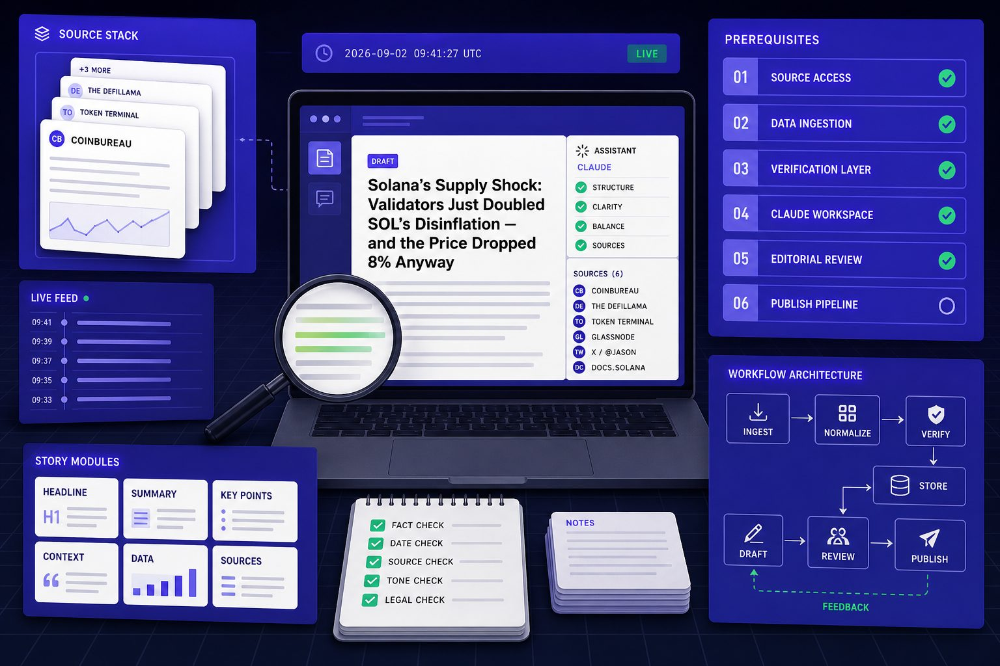
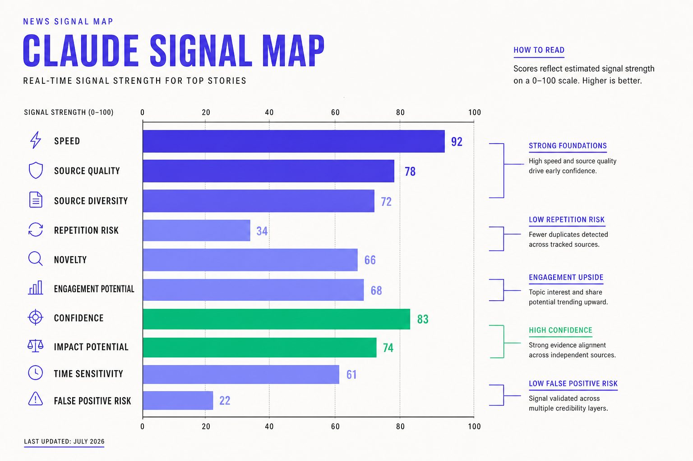
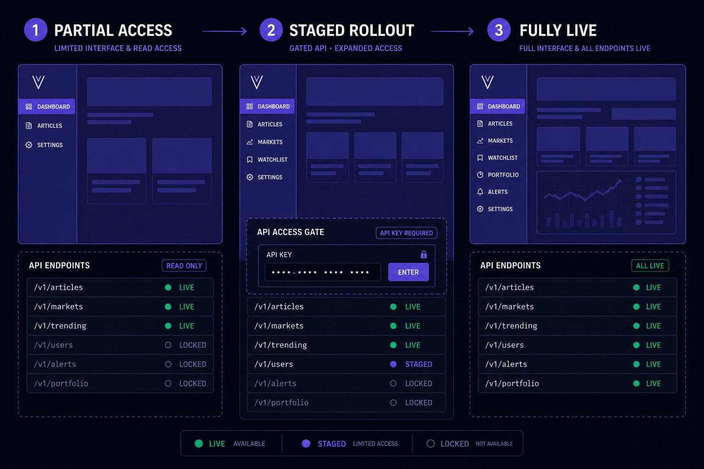
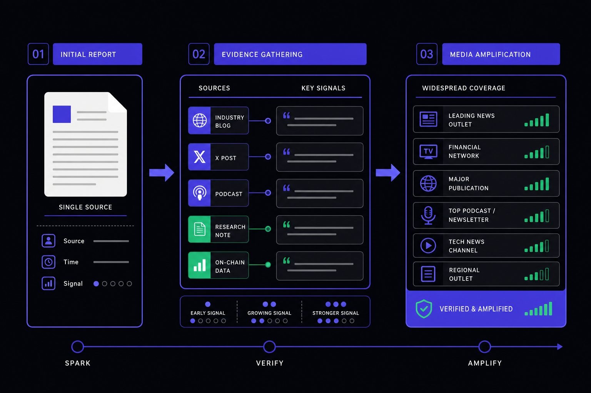
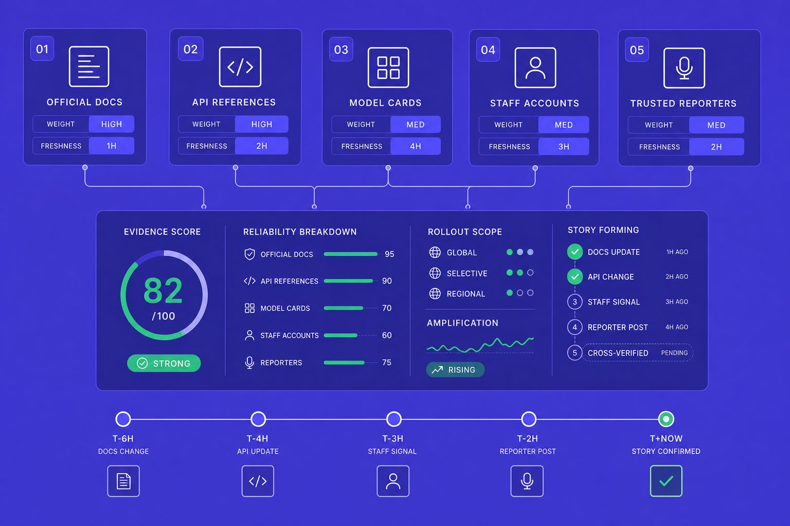

AI Newsroom
Claude News Guide for Tracking AI Rollouts Clearly
Claude news rarely arrives as one clean event. It usually appears in scraps, days or weeks before any full launch note. That matters because rumors, benchmark screenshots, doc edits, and staged rollouts can make weak signals look like confirmed facts. According to Claude Mythos Leak Suggests Launch Is Just Weeks Away - WinCentral, 68% of Polymarket traders recently priced in a near-term Claude release. Market odds like that shape attention, but they do not prove product reality. In this tutorial, you will build a step by step framework for reading AI announcements with more discipline. You will learn how to sort signal from noise, track API and rollout clues, and compare Claude, Gemini, and GPT coverage without getting trapped by hype cycles.
Table of Contents
What You'll Build and Claude News Prerequisites

What You'll Build
In this part, you'll build a simple workflow for judging AI headlines fast. Create a spreadsheet with these columns: Source Type, First Published Date, Evidence Link, and Amplification Score (1-5). For each new Claude news item, fill in a row. For example: Source Type = "GitHub commit," First Published Date = "2024-03-15," Evidence Link = "\[actual URL\]," Amplification Score = "2" (low buzz). This checklist will score each claim by source, timing, evidence, and amplification. Think of it like a chain-of-custody log. You do not trust the loudest post first. You trace where the claim started.
For example, a viral X thread may say a model launch is imminent. Your job is to find the first artifact behind that claim. That artifact might be a GitHub commit, an API changelog, a benchmark post, or a release note. The most important sources are primary ones. Official docs, repos, changelogs, and vendor announcements matter more than reposts or commentary.
What Youll Learn
By the end of this section, you’ll know how to test whether AI news is reliable. You will ask four questions. Who published it first? When did the artifact appear? What evidence is visible? How much did media amplification distort the claim?
You’ll also learn which sources matter most during model launches. Start with original artifacts, then check developer documentation, pricing pages, SDK updates, and status pages. After that, compare secondary coverage. For example, if Gemini news and GPT news both cite the same benchmark screenshot, the screenshot is your real starting point, not the headlines.
Research from TechFastForward shows 89% odds were attached to one rumored launch timeline. That number is useful context. It is not proof. Markets, leaks, and prediction chatter can amplify confidence before hard evidence appears.
Prerequisites
In this part, you only need light background knowledge. Basic familiarity with major AI labs helps. You should also recognize product releases, developer docs, X posts, GitHub pages, and common API changes.
Keep your tool stack simple:
1. A browser
2. A spreadsheet or notes app
3. An X account
4. A GitHub account
5. Access to official model documentation pages
If you want a similar research mindset, read Why Crypto Prices Move Suddenly (And How to Investigate). The method is similar: follow the artifact, not the noise.
Part 1 Building a Claude News Signal Map

In this part, you will build the first version of your Claude news signal map. The goal is simple: sort signals before you judge them. That keeps you from treating every post, screenshot, and headline as equal evidence.
Start with the simplest working version
By the end of this section, you will have a basic matrix you can use today. Open a spreadsheet and create four columns with these headers: "First-Party Sources," "Second-Hand Reporting," "Screenshots," and "Anonymous Rumor Accounts." This works because you are separating evidence by origin, not by hype level. Now let's classify your first example. Take a recent Claude announcement you've seen. First, identify the source type. If it comes from Anthropic's official blog or documentation, place it in the "First-Party Sources" column. If it's a news article citing those materials, it goes in "Second-Hand Reporting." Screenshots of features go in the third column, and unverified claims from anonymous accounts go in the fourth.
First-party sources include official docs, API pages, pricing tables, SDK notes, release notes, and company posts. Second-hand reporting includes articles that cite those materials. Screenshots sit lower because they can be real, cropped, old, or stripped of context. Anonymous rumor accounts belong at the bottom until you can verify their claims elsewhere.
Think of this like triage in a noisy emergency room. You do not treat the loudest voice first. You check the strongest signal first.
Classify rumors benchmark leaks and dev docs
In this part, you will learn what benchmark leaks actually prove. They prove that some artifact exists, or appeared to exist, at a certain time. They do not prove final model quality, launch timing, product scope, or public availability.
That is why you should treat benchmark leaks as clues, not conclusions. Many benchmark leaks omit methodology, model version, prompt settings, and reproducibility steps. Some may even reflect internal testing rather than a finished release.
For example, a benchmark table can spread fast across X and turn into instant GPT news. Yet the table may not show how the model was tested, who ran it, or whether the result can be repeated. Data from OpenAI GPT-5.6 Leak Signals 1.5M Context June Launch 2026 | TechFastForward cites a 43% increase in context length, but that still does not confirm a launch date or real-world performance.
Developer documentation deserves extra weight. Hidden docs, changelogs, SDK notes, and pricing updates often appear before broad marketing pushes. They are usually written for builders, not for buzz, which makes them more useful than many AI leaks.
Rank sources before you rank claims
By the end of this section, you will understand why source hierarchy beats headline intensity. A quiet official artifact usually carries more weight than a viral post with stronger wording. If a pricing page changes or an SDK note adds a new model name, that can matter more than a dramatic rumor thread.
For example, a speculative article like Claude Mythos Leak Suggests Launch Is Just Weeks Away - WinCentral may point you toward a real lead. But you should still rank the underlying artifact above the article itself. If you already track source quality in markets, the same habit applies here, much like Why Crypto Prices Move Suddenly (And How to Investigate). Headlines amplify. Developer documentation often reveals.
Part 2 Adding Staged Rollouts and API Changes

In this part, you’ll learn how to read launch language with less guesswork. You’ll also learn how API changes expose what is truly live. This matters in Claude news because headlines often treat partial access like a full release.
1. Read rollout language carefully
By the end of this section, you’ll understand what a staged rollout in AI actually means. A staged rollout is a release that expands in controlled steps, not all at once. Think of it like opening a stadium by section, not by unlocking every gate.
When you see “available now,” slow down and inspect the limits. Check for geography, paid tier rules, waitlists, and platform-only access. For example, a Claude release may appear on web first, then mobile, then API later. That is not one launch event. It is a sequence.
This step protects you from false confidence. A headline can be technically true while still being useless for most readers. In AI leaks and GPT news, that gap causes confusion fast. According to EONMSK News, leaked launch hype can build within 24 hours, even before broad access exists.
2. Track API changes that confirm product reality
By the end of this section, you’ll know how API updates confirm model releases. Product marketing can stay vague. API changes usually cannot. They must define model IDs, pricing, limits, deprecations, and access rules.
For example, if docs mention a new model name, that is a clue. If the pricing page adds that model, confidence rises. If rate limits, SDK support, and feature flags also appear, the release looks operational. That is stronger evidence than rumor posts like WinCentral’s Claude leak report or speculative GPT news coverage from TechFastForward.
What’s happening here is simple. API changes force companies to expose working details. You can use the same logic when tracking other fast markets, much like Why Crypto Prices Move Suddenly (And How to Investigate) teaches you to follow the underlying signal.
3. Separate availability from capability
By the end of this section, you’ll separate existence from access. A model can exist internally, appear in docs, and still remain unavailable to you. That difference explains why staged rollouts create so many bad assumptions.
Notice how this reduces error. You stop asking, “Was it announced?” and start asking, “Who can use it today?” That question gives you a cleaner read on Claude news, API changes, and any claimed Claude release.
Part 3 Testing Claude News Against Media Amplification

In this part, you will learn how to test Claude news before you trust it. Your goal is simple: separate evidence from momentum. Accurate AI launch coverage rarely arrives in one clean post. It arrives in pieces, then grows through media amplification.
1. Build a verification checklist
By the end of this section, you should have a checklist you can reuse fast.
Start with four questions.
1. Who published the claim first?
2. What primary evidence supports it?
3. What changed in public after the claim?
4. What still remains unverified?
Think of this like checking a chain of custody. A headline may look strong, but the first source often tells a weaker story. For example, a leak report may cite a screenshot, yet the screenshot shows no date, URL, or account context. That is not proof. That is a clue.
Your checklist should also include failure flags. Mark the claim as weak if screenshots are cropped, if posts were deleted, or if every article points back to the same anonymous source. A story built on recycled speculation can spread fast and still stay fragile. This is the same logic you would use in Why Crypto Prices Move Suddenly (And How to Investigate).
2. Compare Claude news with Gemini news and GPT news
In this part, you will learn how cross-comparison exposes repeated patterns.
Do not review Claude in isolation. Place Claude news beside Gemini news and GPT news. Then compare the structure of the coverage, not just the claim itself. Ask what got repeated, what got stretched, and what got assumed.
For example, benchmark chatter often becomes capability hype. A selective demo becomes a broad product claim. A limited rollout becomes “now available” in follow-up articles. That pattern shows up across AI leaks because reporters, creators, and aggregator accounts often amplify the most exciting version first.
According to TechFastForward, one GPT leak framed a 2 million token context race as a major signal. That may matter. But it can also pull coverage toward scale theater before access, pricing, or reliability become clear.
3. Stress test your conclusion before sharing it
By the end of this section, you should know how to pressure-test your own take.
Write your conclusion in one sentence. Then try to break it. Ask: what new post, doc edit, or product page would prove me wrong today? If one missing screenshot can collapse your argument, your argument is too thin.
A better conclusion sounds like this: “Current evidence suggests a staged capability signal, but public availability remains unclear.” That language survives updates better. It keeps you directionally right, even when the next post shifts the story.
This matters because your job is not to be first. Your job is to be durable. If you want to sharpen your source judgment further, read TechCrunch vs The Verge: Which Tech Publication Should You Follow?.
Conclusion: Put Claude News on a System

You now have a practical way to read Claude news without chasing every spike in attention. The real win is not speed. It is discipline. When you build production watchlists for official docs, API references, model cards, staff accounts, and trusted reporters, you stop treating each headline like a surprise. You start seeing how stories form, who moved first, what changed in public, and where the evidence still breaks.
That shift matters because strong analysis comes from repeatable structure, not instinct. Turn this framework into a dashboard, spreadsheet, or saved template. Score each new claim by source quality, benchmark reliability, rollout scope, API confirmation, and media amplification. In practice, that means you can assess new Claude news in minutes instead of reacting emotionally to screenshots, vague posts, or recycled summaries. You are not trying to predict every launch. You are building a process that stays useful when facts are partial and timelines are messy.
What you learned here travels well. You now know how to rank sources before trusting them. You know why benchmark leaks need caution before interpretation. You know how staged access can distort launch coverage. You know how API pages and documentation can confirm what headlines cannot. And you know how amplification can make a weak claim feel settled long before the evidence supports it. That is a durable edge, especially when you compare Claude news with Gemini news, GPT news, or the next wave of AI leaks.
The next move is simple. Apply the same method outside AI. Crypto, cybersecurity, and finance news often break through leaks, partial disclosures, quiet documentation changes, and selective framing. The narrative shifts. The mechanics do not.
If you keep refining this workflow, you will not just follow the next story more calmly. You will read the entire information cycle with sharper judgment. Want to learn more? Learn More to explore how we can help.